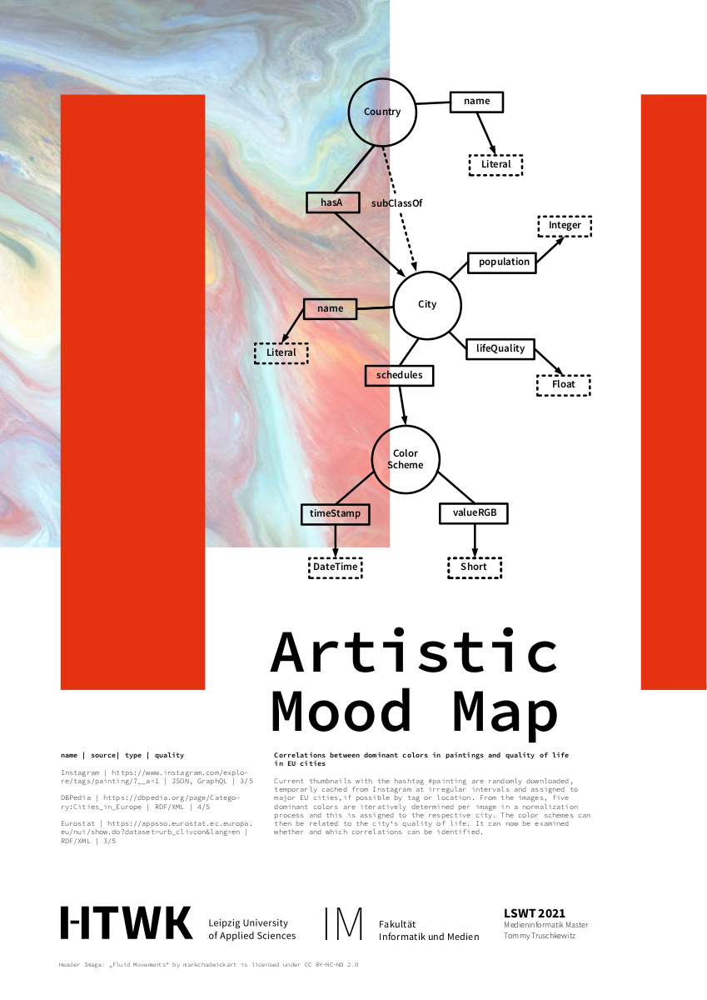

Tommy Truschkewitz
Aktuelle Thumbnails mit dem Hashtag #painting werden in unregelmäßigen Abständen zufällig von Instagram heruntergeladen, temporär zwischengespeichert und den EU-Großstädten, falls möglich, mitihlfe der Hashtags oder Ortsangabe zugeordnet. Aus den Bildern werden in einem Normalisierungsprozess iterativ fünf dominante Farben pro Bild ermittelt ermittelt und diese der jeweiligen Stadt zugeordnet. Die Farbschemata können dann mit der Lebensqualität der Stadt in Verbindung gebracht werden. Es kann nun untersucht werden ob und welche Korrelationen sich erkennen lassen.
Current thumbnails with the hashtag #painting are randomly downloaded, temporarly cached from Instagram at irregular intervals and assigned to major EU cities,if possible by tag or location. From the images, five dominant colors are iteratively determined per image in a normalization process and this is assigned to the respective city. The color schemes can then be related to the city‘s quality of life. It can now be examined whether and which correlations can be identified.
